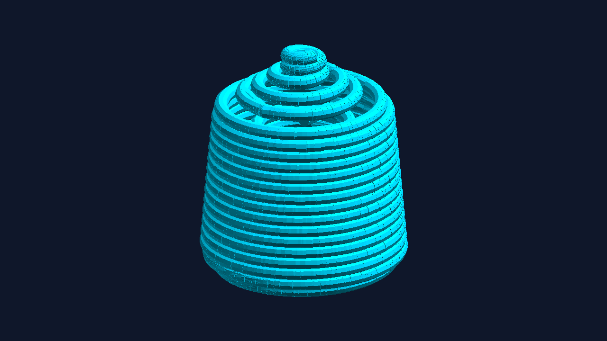

01 / BİTİRME PROJESİ · 2026
Helisel conformal soğutma
Plastik enjeksiyon kalıbında geleneksel baffle kanallar ile çift helisel uyumlu kanalları SolidWorks ve Autodesk Moldflow üzerinden karşılaştırdım.
%47,4soğutma kaynaklı çarpılmada simülasyonla hesaplanan azalma
2,246 mm → 1,182 mm
Çalışmayı ve raporu incele
2,246 mm → 1,182 mm